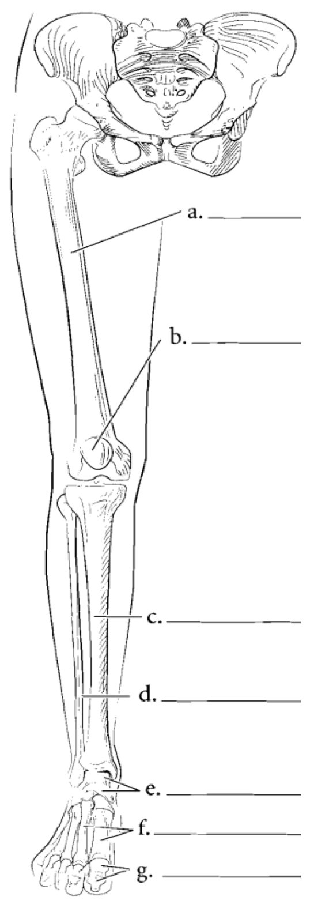
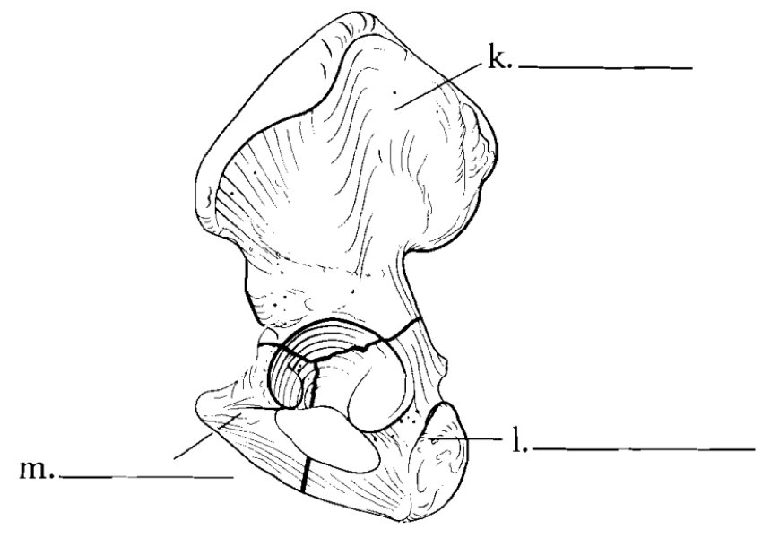
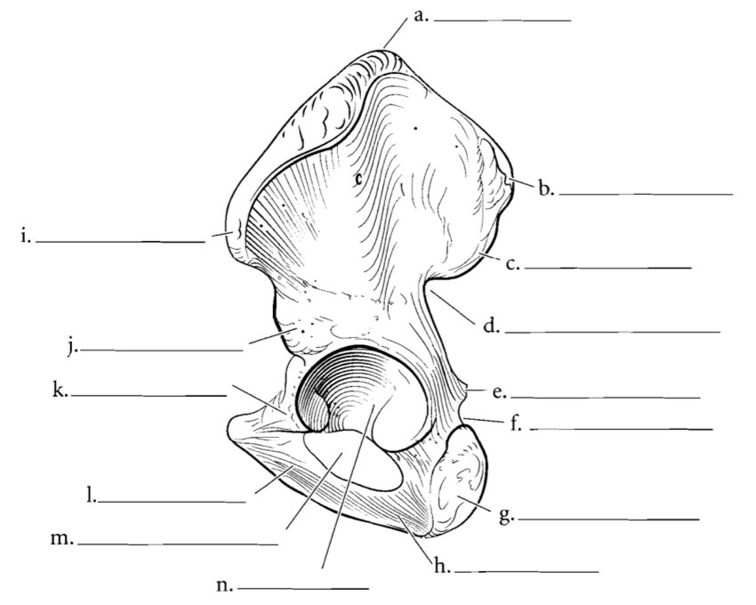
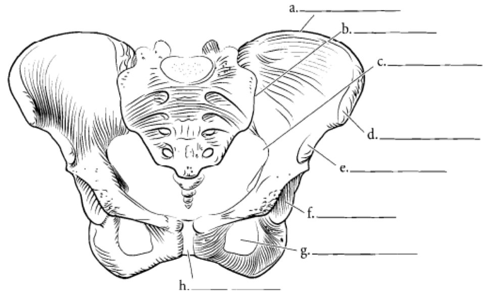
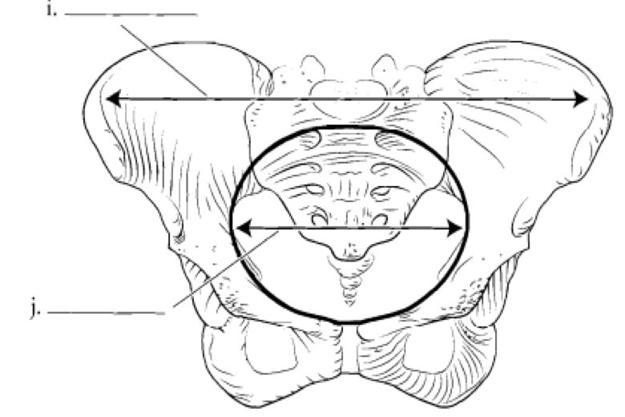
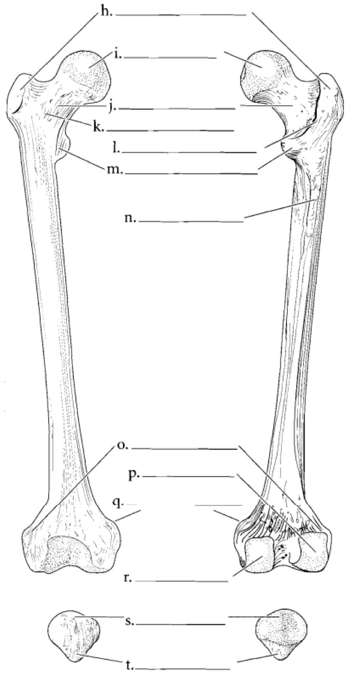
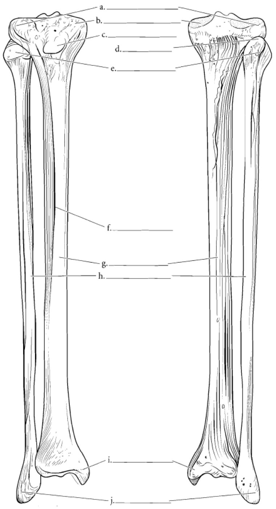
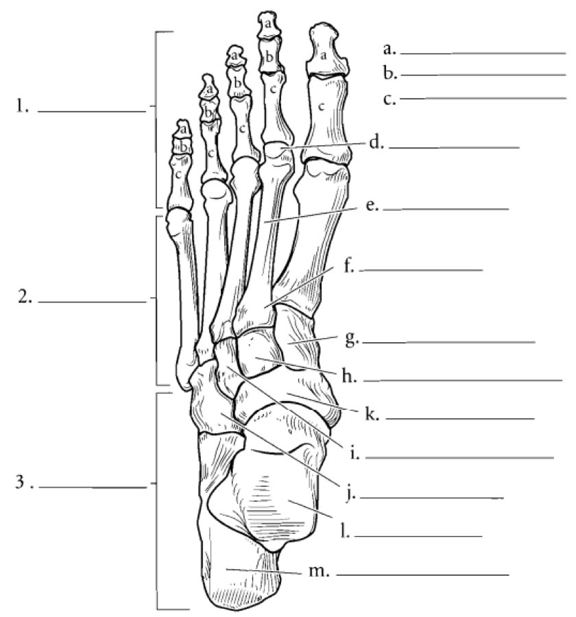
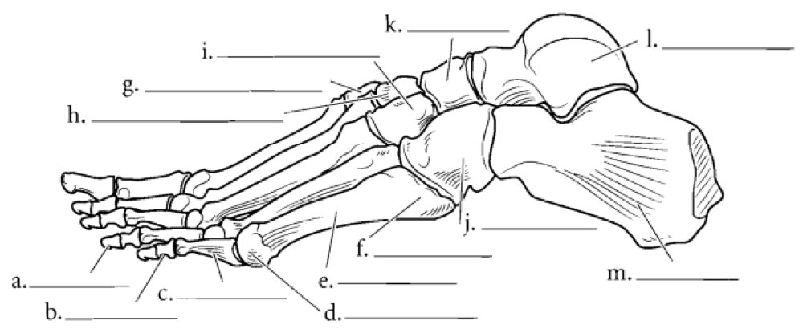

S1 · Anatomy · Summary
Lower limb bones (diagrams)
- Essentials
- Whole limb
- Hip bone
- Bony pelvis
- Femur & patella
- Tibia & fibula
- Foot
- Exam traps
- Self-check
How to use this page
The PDF only gives the drawings with empty blanks (a., b., c.…). Below each drawing is the answer key: the
structure each letter points to (English, French in brackets). The PDF itself doesn't print these names. They were
identified from the drawings, and the lists in the 🎯 boxes come from the official keys of past exams.
"?" marks a label whose line is ambiguous on the drawing — check it against your teacher's corrected copy.
If you remember only this
- Hip bone (os coxal) = 3 pieces fused at the acetabulum: ilium (top), pubis (front), ischium (back-bottom). Flat, twisted "two-bladed propeller", 4 borders, joins the limb to the spine.
- Hip bone lateral surface: gluteal surface, posterior gluteal line, acetabulum (and its limbus), obturator foramen. Medial surface: arcuate line, pecten pubis, obturator groove.
- Anterior border: innominate notch, iliopectineal (iliopubic) eminence. Posterior border: greater sciatic notch, ischial spine, lesser sciatic notch.
- Pelvic inlet (separates greater and lesser pelvis): promontory of the sacrum behind, arcuate lines laterally, pubic symphysis in front.
- Distal femur articular surfaces: patellar surface + medial and lateral condyles (not the epicondyles).
- Tibial plateau: medial and lateral superior articular surfaces + anterior and posterior intercondylar areas + intercondylar tubercles. Distal tibia articular surfaces: inferior articular surface + medial malleolus.
- Tarsus = 7 bones. Posterior: talus, calcaneus. Anterior: navicular, cuboid, 3 cuneiforms.
1. Bones of the pelvic limb (Les os du membre pelvien) p. 1

| Label | Structure |
|---|---|
| a | Femur (thigh) |
| b | Patella (rotule), in front of the knee |
| c | Tibia — medial, thick |
| d | Fibula (péroné) — lateral, thin |
| e | Tarsus (tarse) |
| f | Metatarsals (métatarse) |
| g | Phalanges |
Orientation trick
Tibia = medial (big-toe side), fibula = lateral. The femoral head and the big toe point to the medial side, so they
tell you which side of a drawing is medial.
2. The hip bone (L'os coxal) p. 2 2023-24 · 2024-25 · 2025-26
Its constitution: 3 pieces

| Label | Piece |
|---|---|
| k | Ilium — the upper wing |
| l | Pubis — anterior |
| m | Ischium — posterior and inferior |
Lateral surface (face latérale)

| Label | Structure |
|---|---|
| a | Iliac crest (superior border) |
| b | Anterior superior iliac spine (ASIS) |
| c | Anterior inferior iliac spine (AIIS) |
| d | Notch below the AIIS (anterior border) ? |
| e | Iliopectineal (iliopubic) eminence |
| f | Pubic tubercle / spine ? |
| g | Body of the pubis (symphyseal end) ? |
| h | Ischiopubic ramus (inferior border) |
| i | Posterior superior iliac spine (PSIS) |
| j | Greater sciatic notch ? |
| k | Ischial spine |
| l | Ischial tuberosity |
| m | Obturator foramen |
| n | Acetabulum |
🎯 What the exams ask — surfaces and borders (official keys)
| Part | Belongs to it | Offered as wrong options |
|---|---|---|
| Lateral surface |
Gluteal surface, posterior gluteal line, acetabulum, acetabular limbus, obturator foramen | Arcuate line, auricular surface, pecten pubis, obturator groove |
| Medial surface |
Arcuate line, pecten pubis, obturator groove | Anterior gluteal line, gluteal surface |
| Anterior border |
Innominate notch, iliopectineal (iliopubic) eminence | Greater sciatic notch, "lesser innominate notch", ischial tuberosity |
| Posterior border |
Greater sciatic notch, lesser sciatic notch, ischial spine | Innominate notch, iliopectineal eminence |
Memory trick
Gluteal = lateral (the buttock is outside). Everything facing the inside of the pelvis — arcuate line, pecten,
obturator groove — is medial. Sciatic notches and the ischial spine are on the posterior border (ischium side).
3. The bony pelvis (Le bassin osseux) p. 3 2025-26

| Label | Structure |
|---|---|
| a | Iliac crest |
| b | Iliac fossa (inner surface of the ilium) |
| c | Arcuate line |
| d | Anterior superior iliac spine |
| e | Anterior inferior iliac spine |
| f | Acetabulum (rim) ? |
| g | Obturator foramen |
| h | Pubic symphysis |

| Label | Structure |
|---|---|
| i | Greater pelvis (grand bassin) — between the iliac wings, above the inlet |
| j | Lesser pelvis (petit bassin) — inside the pelvic inlet |
🎯 Boundaries of the pelvic inlet (2025-26)
- Behind: promontory of the sacrum
- Laterally: arcuate lines of the hip bones
- In front: pubic symphysis
4. Femur and patella (anterior and posterior views) p. 4 2023-24 · 2024-25
Femur = long bone of the thigh: proximal epiphysis, diaphysis (shaft), distal epiphysis.

| Label | Structure |
|---|---|
| Proximal epiphysis | |
| h | Greater trochanter — lateral, above |
| i | Head of the femur |
| j | Neck of the femur |
| k | Intertrochanteric line — anterior |
| l | Intertrochanteric crest — posterior |
| m | Lesser trochanter — medial, below the neck |
| Shaft | |
| n | Linea aspera (ligne âpre) — posterior ridge |
| Distal epiphysis | |
| o | Lateral epicondyle |
| p | Lateral condyle |
| q | Medial epicondyle |
| r | Medial condyle |
| Patella | |
| s | Base — broad upper edge |
| t | Apex — points down |
🎯 Articular surfaces of the distal femur (2023-24 · 2024-25)
Patellar surface (for the patella) + medial condyle + lateral condyle (for the tibial plateau).
Memory trick
Condyle = the rounded joint surface; epicondyle = the bump on top of it — never articular.
5. Skeleton of the leg: tibia and fibula p. 5 2023-24 · 2024-25 · 2025-26

| Label | Structure |
|---|---|
| a | Lateral condyle of the tibia (lateral superior articular surface) |
| b | Medial condyle of the tibia (medial superior articular surface) |
| c | Anterior tibial tuberosity |
| d | Proximal tibiofibular joint (fibular articular surface of the tibia) ? |
| e | Head of the fibula |
| f | Anterior border (crest) of the tibia |
| g | Shaft of the tibia |
| h | Fibula (shaft) |
| i | Medial malleolus — tibia |
| j | Lateral malleolus — fibula |
🎯 Tibia — what the exams ask (official keys)
| Question | Answer | Wrong options used |
|---|---|---|
| Tibial plateau (base of the proximal epiphysis, articulates with the femoral condyles) |
Medial and lateral superior articular surfaces, anterior and posterior intercondylar areas, intercondylar tubercles | Fibular articular surface, oblique crest, medial malleolus, anterior tibial tuberosity, medial tibial tuberosity |
| Tuberosities of the proximal epiphysis (a quadrangular pyramid: 1 base, 4 faces) |
Anterior, lateral, medial tibial tuberosities | "Posterior" and "inferior" tuberosities — don't exist |
| Articular surfaces of the distal epiphysis (articulates below with the talus) |
Inferior tibial articular surface + articular surface of the medial malleolus | Lateral malleolus (it's on the fibula), superior articular surfaces (they're proximal) |
6. Skeleton of the foot (Le squelette du pied) p. 6 2023-24

| Label | Structure |
|---|---|
| 1 | Phalanges |
| 2 | Metatarsus (5 metatarsals) |
| 3 | Tarsus (7 bones) |
| a / b / c | Distal / middle / proximal phalanx (the big toe has no middle one) |
| d / e / f | Metatarsal head / body / base |
| g | Medial cuneiform |
| h | Intermediate cuneiform |
| i | Lateral cuneiform |
| j | Cuboid — lateral, in front of the calcaneus |
| k | Navicular (scaphoïde tarsien) — medial, in front of the talus |
| l | Talus (astragale) |
| m | Calcaneus |

Exam traps
Don't fall for these
- Epicondyles and the intercondylar fossa are not articular surfaces of the femur. 2 years
- "Posterior surface of the patella" is offered for the femur — it belongs to the patella. 2 years
- Tibial plateau ≠ anterior tibial tuberosity, medial tuberosity, fibular articular surface, oblique crest or medial malleolus. 3 years
- Distal tibia: the lateral malleolus is on the fibula; the superior articular surfaces are on the plateau. 2 years
- "Posterior" and "inferior" tibial tuberosities don't exist: only anterior, medial, lateral.
- Arcuate line, pecten pubis, obturator groove, auricular surface are not lateral; gluteal lines and surface are not medial. 3 years
- Greater sciatic notch is on the posterior border; innominate notch and iliopectineal eminence on the anterior. 2 years
- Pelvic inlet: not the ischial tuberosity, not the coccyx.
- Lunate, talus, calcaneus are not anterior tarsal bones.
Self-check
Which 3 pieces form the hip bone, and where do they meet?
Ilium, ischium, pubis — they meet in the acetabulum.
Name 4 elements of the hip bone's lateral surface.
Gluteal surface, posterior gluteal line, acetabulum (with its limbus), obturator foramen.
Name 3 elements of the hip bone's medial surface.
Arcuate line, pecten pubis, obturator groove.
What is on the posterior border of the hip bone?
Greater sciatic notch, ischial spine, lesser sciatic notch.
What are the boundaries of the pelvic inlet?
Promontory of the sacrum (behind), arcuate lines (laterally), pubic symphysis (in front).
Articular surfaces of the distal femur?
Patellar surface, medial condyle, lateral condyle.
Which elements make up the tibial plateau?
Medial and lateral superior articular surfaces, anterior and posterior intercondylar areas, intercondylar tubercles.
Articular surfaces of the distal tibia?
Inferior tibial articular surface and the articular surface of the medial malleolus (with the talus).
Which tuberosities does the proximal tibia have?
Anterior, medial and lateral tibial tuberosities.
List the 7 tarsal bones, posterior then anterior.
Posterior: talus, calcaneus. Anterior: navicular, cuboid, medial, intermediate and lateral cuneiforms.
Femur: which trochanter is lateral, which is medial? Where is the linea aspera?
Greater trochanter lateral, lesser trochanter medial (below the neck). Linea aspera on the posterior shaft.
Patella: base or apex at the top?
Base at the top, apex pointing down.